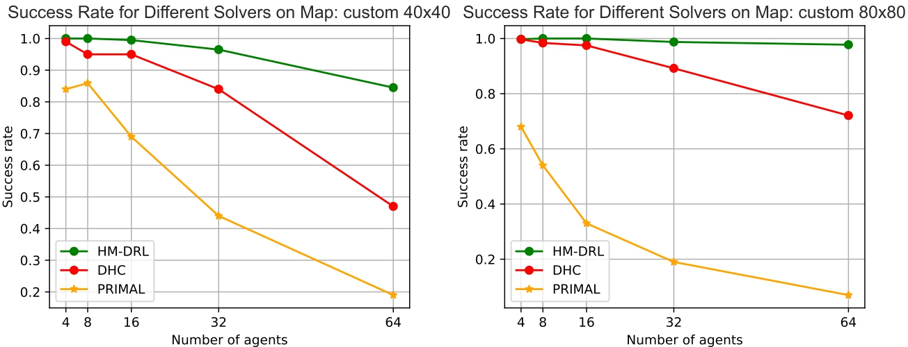

HM‑DRL: Enhancing Multi‑Agent Pathfinding with a Heatmap‑Based Heuristic for Distributed Deep Reinforcement Learning
Authors: M. Boumediene, A. Maoudj & A. L. Christensen
Published: 15 July 2025 | Journal: Applied Intelligence, Vol. 55, Art. 873
Abstract
The integration of mobile robots into industrial environments, particularly in warehouse logistics, has led to an increasing need for efficient Multi-Agent Pathfinding (MAPF) solutions. These solutions are crucial for coordinating large fleets of robots in complex operational settings, yet several existing methods struggle with scalability issues in densely populated environments. Additionally, many existing learning-based approaches are computationally expensive and require excessive training time.
In this paper, we propose a Deep Reinforcement Learning (DRL)-based approach that exploits the strengths of DRL and graph-convolutional communication to efficiently coordinate fleets of mobile robots with limited communication range in partially observable environments. We introduce a novel heatmap-based heuristic that reduces the observation space while retaining the critical information needed for effective path planning and conflict resolution.
Additionally, we use optimized training objectives that allow agents to reduce the training time by as much as 3.4 times compared to state-of-the-art DRL-based methods. Our approach also employs curriculum learning and distributed training to improve efficiency. To further enhance performance, we introduce mechanisms for resolving conflicts in constrained scenarios, resulting in a higher success rate and overall operational efficiency.
Finally, we validate our approach through extensive simulation-based experiments, showing that it outperforms the state-of-the-art DRL-based MAPF methods and that it scales effectively to larger maps and densely populated environments.
Experimental Results

Success Rate Comparison
We compared HM‑DRL against DHC and PRIMAL by measuring the success rate on the custom 40×40 map (256‑step limit) and custom 80×80 map (386‑step limit) across 400 randomized scenarios per agent count.

Video
Citation
@article{boumediene2025hmdrl,
author = {Boumediene, Mouad and Maoudj, Abderraouf and Christensen, Anders Lyhne},
title = {HM-DRL: Enhancing Multi‑Agent Pathfinding with a Heatmap‑Based Heuristic for Distributed Deep Reinforcement Learning},
journal = {Applied Intelligence},
volume = {55},
pages = {873},
day = {15},
month = {Jul},
year = {2025},
doi = {10.1007/s10489-025-06747-0},
url = {https://doi.org/10.1007/s10489-025-06747-0},
publisher = {Springer}
}